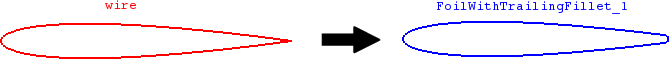

cfdmsh 4.0 documentation
cfdmsh 4.0 documentation cfdmsh 4.0 documentation


Add a trailing fillet to a foil wire.
This function first detects trailing vertexes. It then "cuts" the foil so as to give it a trailing edge thickness close to the one specified by the user. Finally, it creates fillets on both sides of the trailing edge.
def MakeFoilTrailingFillets( thick, wire = None, angle = 25, tol = 1e-7, add = True, infa = False ):

| Name | Description | Type | GUI selection [?] | Selection by name [?] | Recursive [?] | Default value |
|---|---|---|---|---|---|---|
| thick | The desired approximative trailing edge thickness. | Float | - | - | - | - |
| wire | The input foil. | Wire | yes | yes | yes | None |
| angle | The angle in degrees between two touching sub-edges below which a fillet has to be done. | Float | - | - | - | 25 |
| tol | See here. | Float | - | - | - | 1e-7 |
| add | See here. | Boolean | - | - | - | True |
| infa | See here. | Boolean | - | - | - | False |
| dim Value [?] | single Value [?] | Type | Number | Name |
|---|---|---|---|---|
| - | - | Face | 1 | "FoilWithTrailingFillet" |
from cfdmsh import * # To adapt to the cfdmsh installation method
vertex1 = geompy.MakeVertex(0, 0.1, 0)
vertex2 = geompy.MakeVertex(-0.1, 0, 0)
vertex3 = geompy.MakeVertex(0, -0.1, 0)
vertex4 = geompy.MakeVertex(1, 0, 0)
arc = geompy.MakeArc(vertex1, vertex2, vertex3)
edge1 = geompy.MakeEdge(vertex1, vertex4)
edge2 = geompy.MakeEdge(vertex3, vertex4)
foil = geompy.MakeWire([arc, edge1, edge2])
AddToStudy(foil, "foil")
foil_with_fillet = MakeFoilTrailingFillets(2e-2, foil)
The input foil should be a planar closed wire having no trailing edge thickness, that is having (a) sharp trailing edge(s) ending by a vertex common to the upper and lower edges of the foil.
cfdmsh 4.0 documentation
tougeron-cfd.com © 2016